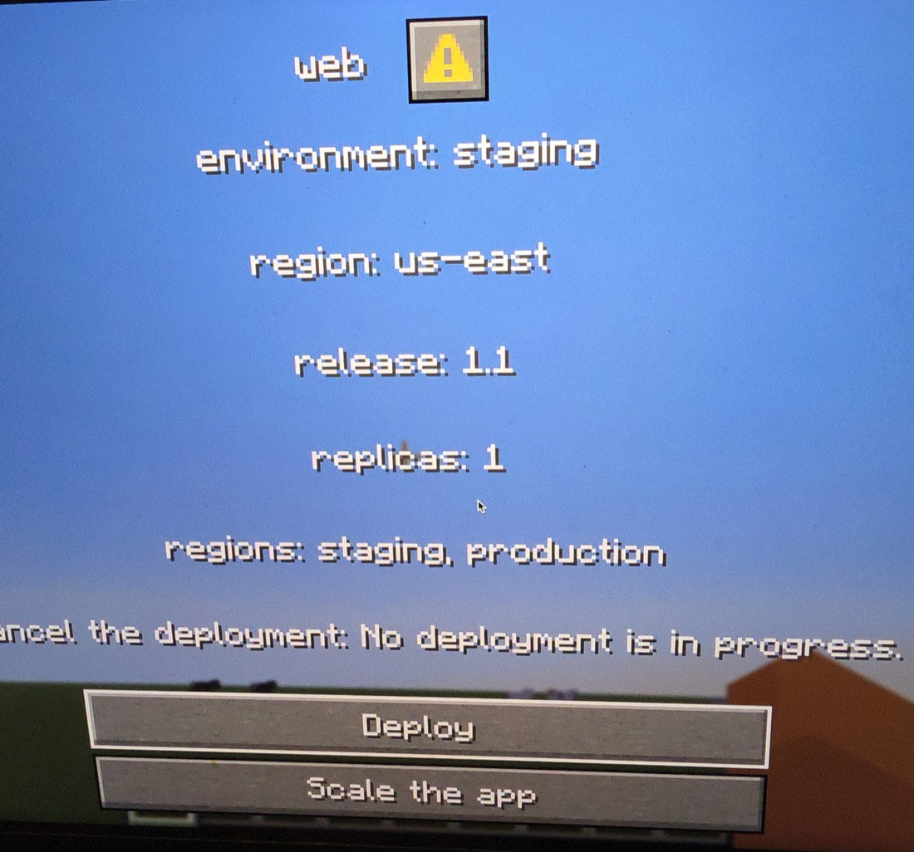
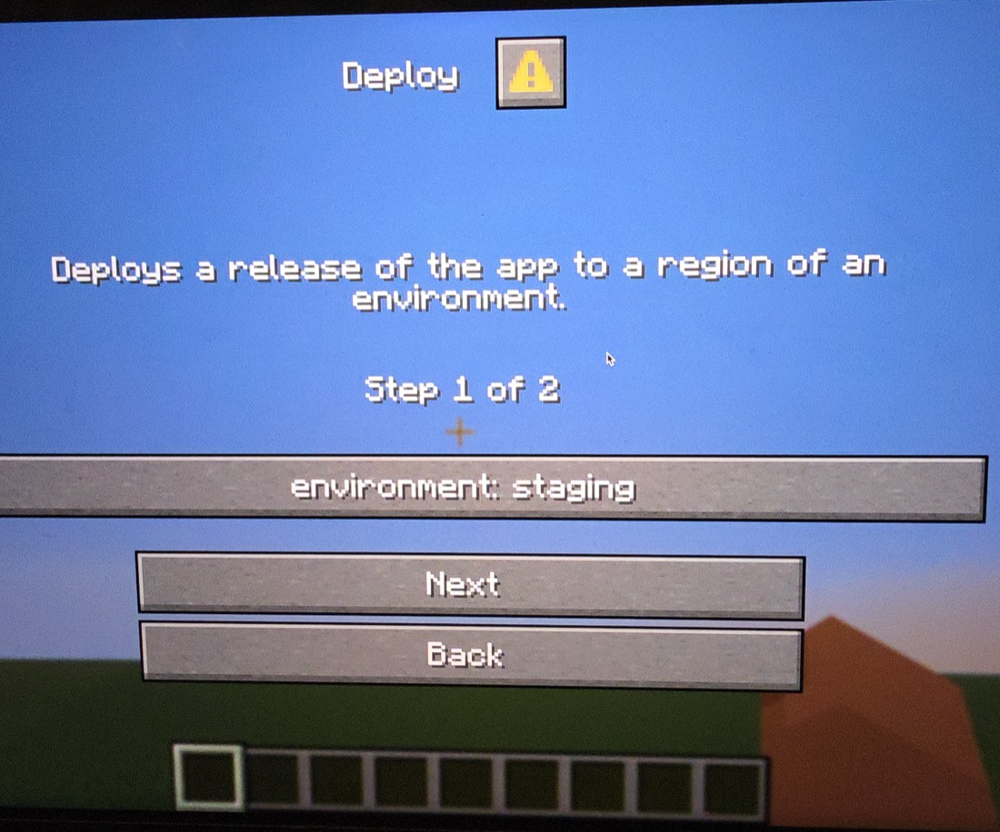
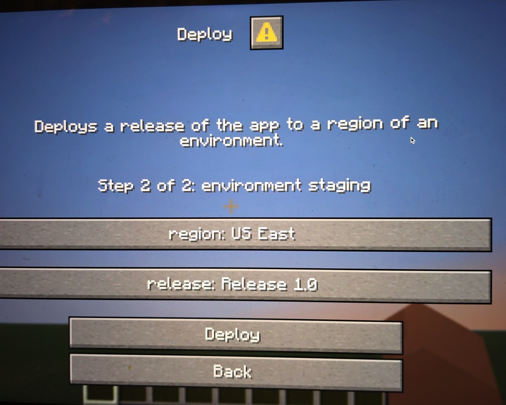
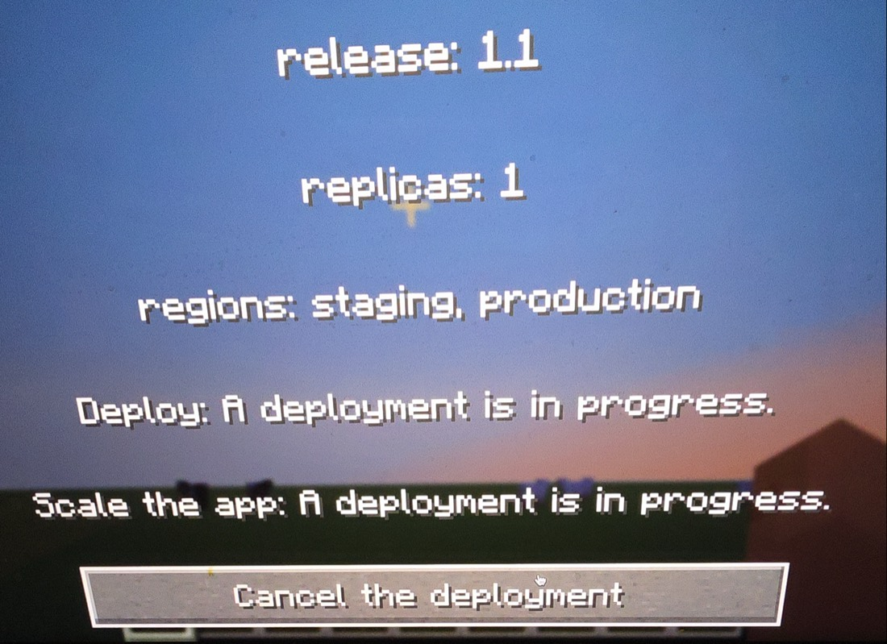
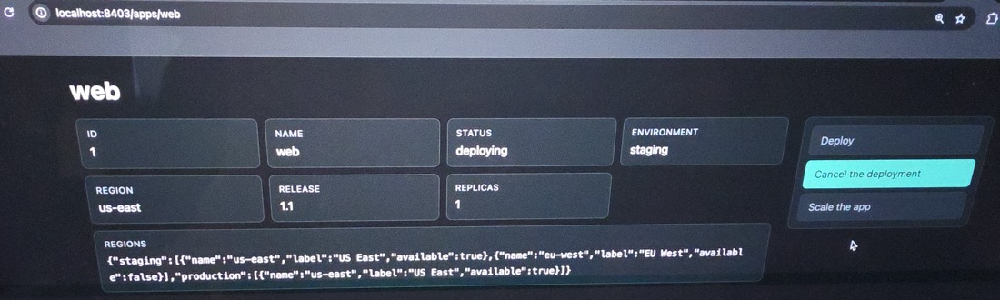
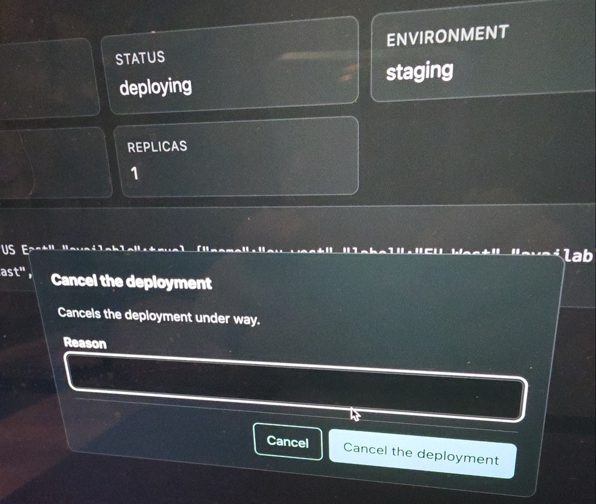
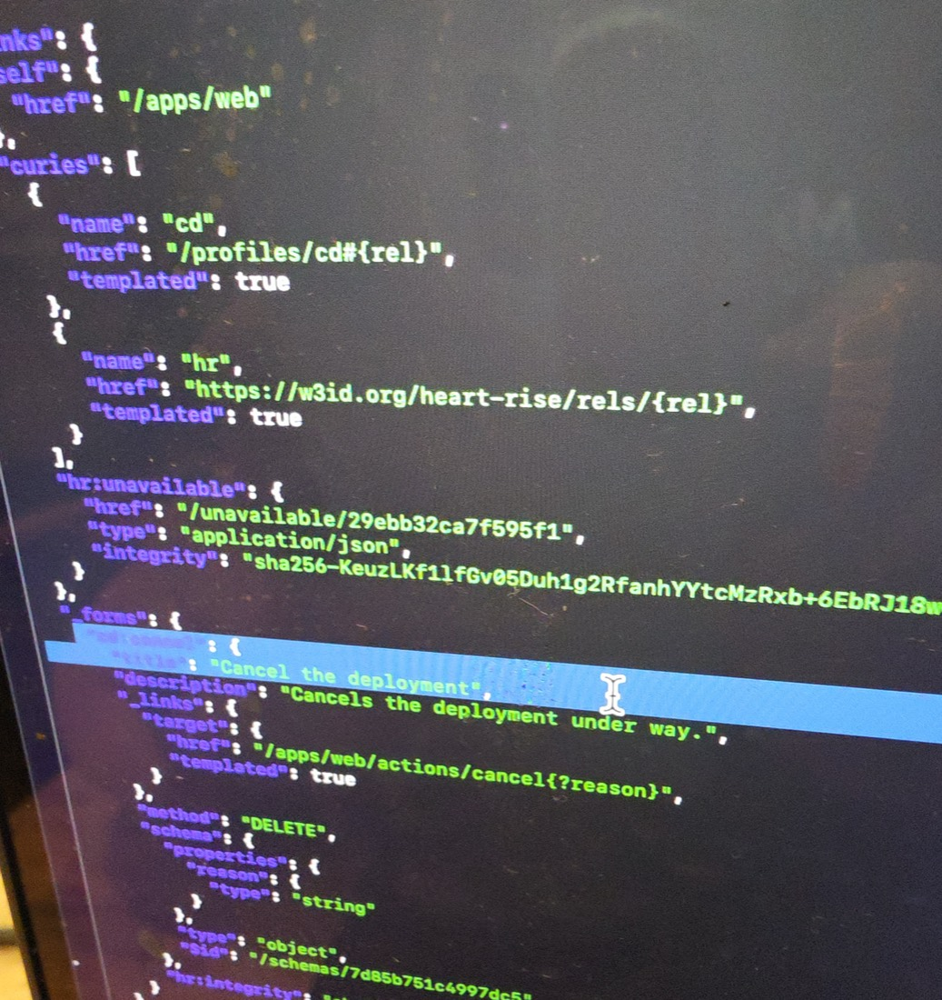
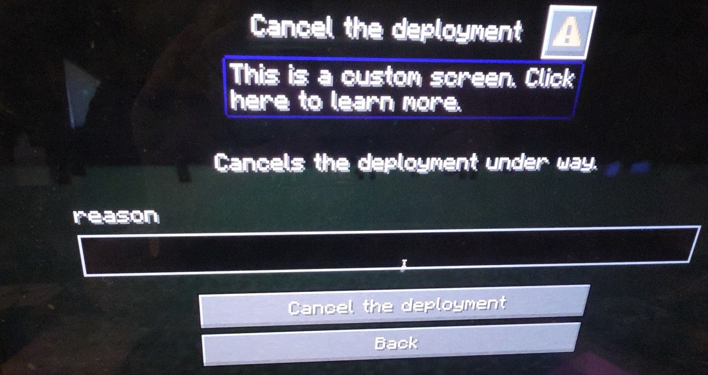
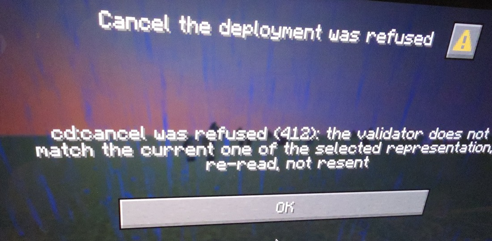

A Paper server plugin shows a HEART resource as a Minecraft dialog. Played on Minecraft 26.3: the deploy service's app web, deployed in two steps, cancelled from a browser, and the stale cancel in Minecraft refused (412) in the server's own words. The plugin knows Minecraft's dialogs and HEART's media type. It knows nothing about deploying.
dialog.feature, against the simulated deploy serviceIf-Match; the answer is the next dialog.Photos of the screen, cropped to it, in the order they were taken. Each one shows a hypermedia idea at work.





text/html: the same acts, the absent ones greyed with their reasons. The regions show as raw JSON, the next thing to fix.content negotiation
reason, from the same schema the dialog uses.one form, many renderings
cd:cancel, a DELETE to a templated target, its schema, and the link to why the others are absent.HAL Schema Forms

| Concept | What HEART puts in the representation | What the dialog does | Photo |
|---|---|---|---|
| A generic client | A media type, HAL Schema Forms, that every HEART service speaks | The plugin's code names no app, no deploy, no region | all |
| Information and controls | The state and its _forms, in one document | Lines of text, then buttons | 1 |
| Only the legal acts | _forms holds the acts this state offers, no others | Idle: Deploy and Scale. Deploying: Cancel | 1, 4 |
| Why an act is absent | An hr:unavailable link to each absent act's reason | A line per absent act, in the server's words | 1, 4 |
| Choices from state | hr:options: a pointer into the state, or a link to a list, with where | A single option holding only those choices | 3 |
| Dependent choices | The region's pointer names a field: /regions/{environment} | Asked one step after the environment | 2, 3 |
| Conditional requests | An ETag on every read | ARTIE sends it back as If-Match on every act | 9 |
| Refusals in the server's words | A 412, 409 or 422 with a problem document | A notice with what the server said; OK reads again | 9 |
| Content negotiation | One resource; Accept picks HAL Schema Forms, HAL-FORMS or text/html | ARTIE asks for HAL Schema Forms; the browser gets HTML | 5, 7 |
| Hypermedia as the engine of application state | Every answer carries the next controls | The answer to a press is the next dialog | 4 |
getText, by the input's key.If-Match.after_action: wait_for_response), not the world.Four files in client/artie-minecraft. One models a dialog; one maps what ARTIE read to dialogs; one asks a form in steps; one is the Paper plugin. ARTIE, the client the rest of the project uses, does the HTTP.
/**
* A dialog as Minecraft shows one (Java Edition 1.21.6 and later): a title, lines of text, the inputs a player
* fills in, and buttons. It knows nothing of any domain: what it holds comes from the representation.
*/
data class Dialog(
val title: String,
val body: List<String>,
val inputs: List<Input> = emptyList(),
val buttons: List<Button>,
)
/** One input a player fills in; what the player entered comes back by [key]. */
sealed interface Input {
val key: String
val label: String
}
/** A line of text, up to [maxLength] characters. */
data class TextInput(override val key: String, override val label: String, val maxLength: Int) : Input
/** One of a closed set of [options], the first chosen to begin with. */
data class OptionInput(override val key: String, override val label: String, val options: List<Option>) : Input
/** One option: the [id] that comes back, and what the player is [shown]. */
data class Option(val id: String, val shown: String)
/** One button: its label, and what pressing it does. */
data class Button(val label: String, val press: Press)
/** What a button does. The fields [Press.Next] and [Press.Send] carry were filled in by the dialogs before. */
sealed interface Press {
/** Opens the form of the act [rel], at its first step. */
data class Open(val rel: String) : Press
/** Asks for the fields of [rel]'s form at [step], whose choices may depend on those filled so far. */
data class Next(val rel: String, val filled: JsonObject, val step: Int) : Press
/** Sends the act [rel], titled [title], with what was filled in. */
data class Send(val rel: String, val title: String, val filled: JsonObject) : Press
/** Back to the resource, as held. */
data object Back : Press
/** The resource, read again. */
data object Read : Press
}data class gives a value type: equality by content, copy, a readable toString. The tests compare dialogs as values.sealed interface closes a hierarchy: every kind of Input and Press is in this file, so a when over them must handle each one, and the compiler checks it.data object is a singleton with a value's toString: Back and Read carry nothing.Press), with the fields filled so far. The dialog keeps no state of its own between steps.rep.affordances for the acts on offer, hr:unavailable for the ones absent. The code never builds an address or decides which acts exist.class DialogSession(private val client: HeartRiseClient) {
private val held get() = checkNotNull(client.current) { "no resource is open" }
/** The resource at [url], as a dialog. */
fun open(url: String): Dialog = resource(client.enter(url))
/** What pressing [button] leads to, with what the player entered in the dialog's inputs as [values], by key. */
fun press(button: Button, values: Map<String, String>): Dialog = when (val press = button.press) {
is Press.Open -> form(press.rel, JsonObject(emptyMap()), 0)
is Press.Next -> form(press.rel, steps(press.rel).filled(press.filled, values), press.step)
is Press.Send -> send(press, steps(press.rel).filled(press.filled, values))
Press.Back -> resource(held)
Press.Read -> read(held.url)
}
private fun steps(rel: String): FormSteps {
val form = checkNotNull(held.affordance(rel)) { "$rel is not offered now" }
return FormSteps(form, client.choices(rel))
}
private fun resource(rep: HeartRepresentation) = Dialog(
title = titleOf(rep),
body = rep.state.mapNotNull { (name, value) -> line(name, value) } + absent(rep),
buttons = rep.affordances.map { (rel, form) -> Button(form.title ?: rel, Press.Open(rel)) },
)when (val press = button.press) binds the subject and smart-casts it in each branch: in is Press.Next, press.step is there to read.else branch: Press is sealed, so the when is exhaustive. A new kind of press won't compile until it's handled here.private val held get() = … is a property with a getter, read fresh each time: ARTIE's current representation, after any re-read.mapNotNull { (name, value) -> … } destructures each state member and drops nulls: a null field has no line.title =, body =, buttons =) read like the dialog they make. private fun send(press: Press.Send, filled: JsonObject): Dialog = try {
resource(client.act(press.rel, filled))
} catch (refused: ActRefused) {
notice("${press.title} was refused", refused.message.orEmpty())
} catch (refused: AccessRefused) {
notice("${press.title} was refused", refused.message.orEmpty())
}
/** What the server said, and a button to read the resource again. */
private fun notice(title: String, said: String) =
Dialog(title, listOf(said), buttons = listOf(Button("OK", Press.Read)))
/** One line for each act that is absent, and why, as the representation's `hr:unavailable` says. */
private fun absent(rep: HeartRepresentation): List<String> {
val said = rep.manifest.unavailable?.let { client.listReader(it.href) } as? JsonObject
return ((said?.get("unavailable") as? JsonArray) ?: JsonArray(emptyList())).mapNotNull { it as? JsonObject }
.map { "${text(it["title"] ?: it["rel"])}: ${text(it["reason"])}" }
}try is an expression: the act's answer becomes the next dialog, a refusal becomes a notice, and either way send returns a Dialog.StaleAct for 412, IllegalTransition for 409, InvalidPayload for 422. All are ActRefused; the message is what the server said.?.let { … } as? JsonObject: follow the link if there is one, and treat the answer as an object only if it is one.listReader, a revalidated GET, so an unchanged answer costs a 304.hr:options points at /regions/{environment}: its choices depend on the environment chosen. A web form can change as you type; a Minecraft dialog can't change while it's open. So the form is asked in steps, each after the fields its choices need. The steps come from the schema, not from knowing what a region is. /**
* The form's properties, a step at a time; one empty step when it has none. A field no other field's choices
* depend on waits for the last step, so the first steps ask only what the choices after them need.
*/
val steps: List<List<String>> = run {
val needed = properties.keys.flatMap(::dependsOn).toSet()
val levels = properties.keys.associateWith(::level)
val last = levels.values.maxOrNull() ?: 0
properties.keys.groupBy { if (it in needed) levels.getValue(it) else last }.toSortedMap().values.toList()
.ifEmpty { listOf(emptyList()) }
} /** How many steps come before [name]'s: one more than the latest of the fields its choices depend on. */
private fun level(name: String, seen: Set<String> = emptySet()): Int =
dependsOn(name).filter { it !in seen }.maxOfOrNull { level(it, seen + name) + 1 } ?: 0
/** The other fields of this form that [name]'s `hr:options` names: in its pointer, or in a link no state fills. */
private fun dependsOn(name: String): Set<String> {
val options = declared[name] ?: return emptySet()
val pointer = (options["pointer"] as? JsonPrimitive)?.content?.let(UriTemplate::names).orEmpty()
val link = ((options["link"] as? JsonObject)?.get("href") as? JsonPrimitive)?.content
?.let(UriTemplate::names).orEmpty() - (options["templatePointers"] as? JsonObject)?.keys.orEmpty()
return (pointer + link).filter { it in properties && it != name }.toSet()
}run { … } computes a value in a block of its own: the last expression is the result.::level, ::dependsOn, UriTemplate::names) pass a function where a lambda would go.associateWith maps each key to a value; groupBy then gathers fields by step, and toSortedMap() puts the steps in order.seen: Set<String> = emptySet()) guards the recursion against fields that name each other.environment is needed by region, so it's step 1; region and release make step 2. private inner class Open : BasicCommand {
override fun execute(source: CommandSourceStack, args: Array<String>) {
val player = source.executor as? Player
if (player == null) {
source.sender.sendMessage("Only a player can open a dialog.")
return
}
val address = args.firstOrNull() ?: config.getString("start").orEmpty()
val session = DialogSession(ArtieClient(transport()))
later(player, session) { session.open(address) }
}
}
/** ARTIE's wire, as the artie command builds it: credentials by origin, integrity checked, the shared kept. */
private fun transport(): CachingTransport {
val wire = UserAgentTransport(next = HttpTransport())
return CachingTransport(IntegrityCheck(AuthTransport(EnvironmentCredentials(System.getenv()), wire)))
}
/**
* Runs [work], ARTIE's reads and acts, off the main thread, and shows [player] the dialog it made back on it. A
* failure, of either, is a notice.
*/
private fun later(player: Player, session: DialogSession, work: () -> Dialog) {
server.scheduler.runTaskAsynchronously(this, Runnable {
val dialog = runCatching(work).getOrElse(::failure)
server.scheduler.runTask(this, Runnable {
val shown = runCatching { render(player, session, dialog) }
.getOrElse { render(player, session, failure(it)) }
player.showDialog(shown)
})
})
}inner class Open : BasicCommand: an inner class reaches its plugin's members (config, later). Paper registers it as /artie.source.executor as? Player: a safe cast, null when the console runs it.args.firstOrNull() ?: config.getString("start"): the Elvis operator gives a default, the deploy service's app from config.yml.Runnable { … } is SAM conversion: a lambda where Java wants a one-method interface. The work runs on Paper's async scheduler; the dialog is shown back on the main thread.runCatching(work).getOrElse(::failure) turns any failure into a notice the player can read, not a stack trace in their face. private fun render(player: Player, session: DialogSession, dialog: Dialog): PaperDialog = PaperDialog.create {
it.empty()
.base(
DialogBase.builder(Component.text(dialog.title))
.canCloseWithEscape(true)
// Every button's answer is the next dialog: the player waits for it, rather than see the world.
.afterAction(
if (dialog.buttons.isEmpty()) DialogBase.DialogAfterAction.CLOSE
else DialogBase.DialogAfterAction.WAIT_FOR_RESPONSE,
)
.body(dialog.body.map { line -> DialogBody.plainMessage(Component.text(line), WIDTH) })
.inputs(dialog.inputs.map(::input))
.build(),
)
.type(type(player, session, dialog))
}
/** One button for each of [dialog]'s, in a column; with none, a notice the player closes. */
private fun type(player: Player, session: DialogSession, dialog: Dialog): DialogType =
if (dialog.buttons.isEmpty()) {
DialogType.notice()
} else {
DialogType.multiAction(dialog.buttons.map { button(player, session, dialog, it) }).columns(1).build()
}
/** A button that sends back what the player entered in [dialog]'s inputs, once. */
private fun button(player: Player, session: DialogSession, dialog: Dialog, button: Button): ActionButton {
val pressed = DialogAction.customClick(
{ response, _ ->
val values = dialog.inputs.associate { it.key to response.getText(it.key).orEmpty() }
later(player, session) { session.press(button, values) }
},
ClickCallback.Options.builder().uses(1).build(),
)
return ActionButton.create(Component.text(button.label), null, BUTTON_WIDTH, pressed)
}
private fun input(input: Input): DialogInput = when (input) {
is TextInput -> DialogInput.text(input.key, Component.text(input.label))
.maxLength(input.maxLength).width(WIDTH).build()
is OptionInput -> DialogInput.singleOption(
input.key,
Component.text(input.label),
input.options.mapIndexed { index, option ->
OptionEntry.create(option.id, Component.text(option.shown), index == 0)
},
).width(WIDTH).build()
}PaperDialog.create { it.empty()… }: a trailing lambda. Paper hands it a builder; it is the lambda's one parameter.DialogAction.customClick(callback, options): Paper keeps the callback on the server and sends Minecraft a key for it. uses(1): each button fires once; the next dialog has new ones.associate { it.key to response.getText(it.key).orEmpty() }: one map from input key to what the player entered; to is an infix function that makes a pair.when (input) over a sealed type, as an expression: a text input or a single option, nothing else. The first option starts chosen (index == 0).Written before the plugin code, as the project's gate requires: it failed first, then passed. The live run did the same thing with a real browser as "someone else".
Scenario: Someone deployed first: the act is refused in the server's words, and not resent
When the player presses "Deploy"
And the player fills in, and presses "Next"
| environment | staging |
And someone else starts deploying "web"
And the player fills in, and presses "Deploy"
| region | us-east |
| release | 1.1 |
Then the dialog is titled "Deploy was refused"
And its body reads
| cd:deploy was refused (412): the validator does not match the current one of the selected representation; re-read, not resent |
And its buttons are
| OK |
And the deploy service's acts, each sent with If-Match, were
| method | path | body |
| POST | /apps/web/actions/deploy | {"environment":"staging","region":"us-east","release":"1.1"} |
When the player presses "OK"
Then the dialog is titled "web"
And its buttons are
| Cancel the deployment |Accept; the server picks. ARTIE asks for application/hal+json and gets HAL Schema Forms. A browser asks for text/html and gets HTML with the same acts as buttons. Neither is told about the other.enum class Dialect(val mediaType: String, val profile: String, val etagTag: String) {
HALFORMS("application/prs.hal-forms+json", "$HEART_RISE_PROFILE/hal-forms", "hf"),
JSONSCHEMA("application/hal+json", "$HEART_RISE_PROFILE/hal-schema-forms", "hsf"),
} /**
* True when `Accept` names HTML above both dialects, as a browser does: the page for people
* ([HtmlView]). A wildcard never selects it, so a client that names nothing still gets HEART.
*/
fun wantsHtml(accept: String?): Boolean = ranksAboveDialects(accept, HTML)Accept ranks text/html above both, as a browser's does. /** [state] as the representation [request] selects, answering 304 when its If-None-Match names it. */
fun represent(state: S, request: Request): Response {
val accept = request.header(ACCEPT)
return when {
Negotiation.wantsHtml(accept) -> html.represent(state, request)
Negotiation.wantsPlainJson(accept) -> {
val ifNoneMatch = request.header(IF_NONE_MATCH)
val etag = StateETag.plain(type, state)
if (ifNoneMatch != null && Validators.notModified(ifNoneMatch, etag)) {
Response(Status.NOT_MODIFIED).header("ETag", etag).header(VARY, ACCEPT)
} else {
plain(Response(Status.OK), state)
}
}
else -> dialect(request).let { Rendered(state, it, limits.rung(it, request)).answer(request) }
}
}If-None-Match gives a 304 per representation. fun layer1(state: S, rung: Rung = Rung.L0): Map<String, Any?> {
val key = type.state.keyOf(state)
val body = LinkedHashMap(type.state.bodyOf(state))
val item = type.itemPath.expand(body)
val self = mapOf("href" to item)
// Sub-collections name this resource, so their links are Layer 1, never in a shared set.
// The state's own links and embedded resources (a gateway's), beside the declared ones.
val said = type.state.hypermediaOf(state)
val collections = type.subCollectionLinks(body) + said.links
// SPEC §6.1: other resources in the state leave it, embedded under their relations.
val embedded = type.embeddedOf(body) + said.embedded
val rendering = rung.setRendering
if (rendering == null) {
body["_links"] = mapOf(
"self" to self,
"curies" to type.profile.curies + HR_CURIE,
// SPEC §6.12: at L0 the set is embedded, so its explanation link is in Layer 1.
UNAVAILABLE_REL to explanationLink(key),
) + collections
if (embedded.isNotEmpty()) body["_embedded"] = embedded
body["_forms"] = forms(offered(key), embedSchemas = true).mapValues { (_, form) -> resolved(form, item) }offered(key) is where "only the legal acts" happens: the state's key (idle, deploying) decides which forms are written.hr:unavailable link goes in beside them, so a client can always ask why the others are absent.LinkedHashMap keeps the state's members in order, which is the order the dialog's lines come in.
/** [state]'s HTML, its forms sending [etag] as If-Match. */
fun <S, K> of(layers: Layers<S, K>, state: S, etag: String): String {
val body = layers.layer1(state, Rung.L0)
val type = layers.type
val order = type.acts.map { type.profile.reference(it.relation) }
return render(body, etag, absent(layers, body), order, fields(listOf(type), choices(type, state))) fun buttons(entries: List<Entry>): String = if (entries.isEmpty()) "" else
"<div class=\"acts\" role=\"toolbar\" aria-label=\"Acts\">" + entries.joinToString("") { entry ->
val id = Html.token(entry.key)
if (entry.form != null) {
"<button type=\"button\" class=\"act\"${Html.attr("data-rel", entry.key)}" +
"${Html.attr("data-dialog", "act-$id")}>${Html.text(entry.title)}</button>"
} else {
"<button type=\"button\" class=\"act\"${Html.attr("data-rel", entry.key)} aria-disabled=\"true\"" +
"${Html.attr("aria-describedby", "why-$id")}>${Html.text(entry.title)}</button>" +
"<span class=\"why\" id=\"why-$id\" hidden>${Html.text(entry.reason)}</span>"
}
} + "</div>"layers.layer1(state, Rung.L0)): the browser sees a projection of exactly what ARTIE reads, so the two can't disagree about which acts are on offer.aria-disabled and its reason; the Minecraft dialog makes it a line of text instead. Same information, two renderings.choices(type, state)). ARTIE resolves hr:options itself, from the state or a linked list.| App web, deploying | HAL Schema Forms (ARTIE) | text/html (browser) | Minecraft dialog (plugin) |
|---|---|---|---|
| Acts on offer | _forms: cd:cancel | Cancel the deployment, active | One button, Cancel the deployment |
| Absent acts | hr:unavailable link, two reasons | Deploy and Scale, greyed, reason on press | Two lines of text with the reasons |
| The cancel form | DELETE, target …/cancel{?reason}, schema | A dialog with a Reason field | A dialog with a reason input |
| Validator | ETag …hsf.L0… | Its own ETag (html), sent by its forms | ARTIE's ETag, as If-Match |
Nested state (regions) | Objects and arrays, as they are | Compact JSON in one tile | Its names: staging, production |
{
"id": 1,
"name": "web",
"status": "deploying",
"environment": "staging",
"region": "us-east",
"release": "1.0",
"replicas": 1,
"regions": {
"staging": [
{
"name": "us-east",
"label": "US East",
"available": true
},
{
"name": "eu-west",
"label": "EU West",
"available": false
}
],
"production": [
{
"name": "us-east",
"label": "US East",
"available": true
}
]
},
"_links": {
"self": {
"href": "/apps/web"
},
"curies": [
{
"name": "cd",
"href": "/profiles/cd#{rel}",
"templated": true
},
{
"name": "hr",
"href": "https://w3id.org/heart-rise/rels/{rel}",
"templated": true
}
],
"hr:unavailable": {
"href": "/unavailable/29ebb32ca7f595f1",
"type": "application/json",
"integrity": "sha256-KeuzLKf1lfGv05Duh1g2RfanhYYtcMzRxb+6EbRJ18w="
}
},
"_forms": {
"cd:cancel": {
"title": "Cancel the deployment",
"description": "Cancels the deployment under way.",
"_links": {
"target": {
"href": "/apps/web/actions/cancel{?reason}",
"templated": true
}
},
"method": "DELETE",
"schema": {
"properties": {
"reason": {
"type": "string"
}
},
"type": "object",
"$id": "/schemas/7d85b751c4997dc5"
},
"hr:integrity": "sha256-BWknAt3Re6a8vOASM+goBreLgXjpqwf3WVpZEE0voow="
}
}
}hr:unavailable){
"unavailable": [
{
"reason": "A deployment is in progress.",
"rel": "/profiles/cd#deploy",
"title": "Deploy"
},
{
"reason": "A deployment is in progress.",
"rel": "/profiles/cd#scale",
"title": "Scale the app"
}
]
}<aside class="side" aria-label="Acts">
<div class="acts" role="toolbar" aria-label="Acts">
<button type="button" class="act" data-rel="cd:deploy" aria-disabled="true" aria-describedby="why-cd-deploy">Deploy</button>
<span class="why" id="why-cd-deploy" hidden>A deployment is in progress.</span>
<button type="button" class="act" data-rel="cd:cancel" data-dialog="act-cd-cancel">Cancel the deployment</button>
<button type="button" class="act" data-rel="cd:scale" aria-disabled="true" aria-describedby="why-cd-scale">Scale the app</button>
<span class="why" id="why-cd-scale" hidden>A deployment is in progress.</span>
</div>
</aside>Today the plugin carries ARTIE and maps HAL Schema Forms to dialogs itself. The server already renders the same L0 as HTML for browsers. It could render it a third way, as Minecraft's own dialog format, and the plugin would shrink to a relay that knows no HEART forms at all. Nothing below exists yet.
application/prs.heart-mc-dialog+json, chosen by Accept as text/html is. The prs tree, like HAL-FORMS's, says it's nobody's standard.HtmlView and from the same L0 representation: state as plain_message lines, offered acts as buttons, absent acts as grey lines with their reasons.minecraft:dynamic/custom actions with id heart:read or heart:act. Their additions carry the target, the method and the If-Match value. Minecraft sends back the input values with them.Options.filled, which the HTML already uses.HtmlProblem renders them as HTML.mcd), as HTML has html.{
"type": "minecraft:multi_action",
"title": "web",
"can_close_with_escape": true,
"after_action": "wait_for_response",
"body": [
{ "type": "minecraft:plain_message", "contents": "status: deploying" },
{ "type": "minecraft:plain_message", "contents": "release 1.0 to us-east of staging" },
{ "type": "minecraft:plain_message",
"contents": { "text": "Deploy: A deployment is in progress.", "color": "gray" } },
{ "type": "minecraft:plain_message",
"contents": { "text": "Scale the app: A deployment is in progress.", "color": "gray" } }
],
"actions": [
{ "label": "Cancel the deployment",
"action": { "type": "minecraft:dynamic/custom", "id": "heart:read",
"additions": { "href": "/apps/web/actions/cancel" } } }
]
}{
"type": "minecraft:multi_action",
"title": "Cancel the deployment",
"after_action": "wait_for_response",
"body": [ { "type": "minecraft:plain_message", "contents": "Cancels the deployment under way." } ],
"inputs": [ { "type": "minecraft:text", "key": "reason", "label": "Reason", "max_length": 256 } ],
"actions": [
{ "label": "Cancel the deployment",
"action": { "type": "minecraft:dynamic/custom", "id": "heart:act",
"additions": { "method": "DELETE", "href": "/apps/web/actions/cancel{?reason}",
"if_match": "\"seq-9.mcd.L0.…\"", "types": { "reason": "string" } } } },
{ "label": "Back",
"action": { "type": "minecraft:dynamic/custom", "id": "heart:read", "additions": { "href": "/apps/web" } } }
]
}Accept, and the credential for its origin.dynamic/custom actions with heart: ids; drop run_command, open_url, suggest_command and any click event inside text.heart:act to href with method and If-Match, the inputs as JSON typed by types; follow heart:read with a GET.| Concern | Today: ARTIE in the plugin | With the media type |
|---|---|---|
| Reading HEART | ARTIE and its libraries: a 5.9 MB jar | One HTTP GET |
| State and why-absent as lines | DialogSession | The server's renderer |
| Steps for dependent choices | FormSteps | The server, by GET of the act's target |
| Choices from state and links | ARTIE's FormChoices, with reads of the linked list | The server, as for HTML |
| Typing what was typed | FormSteps.typed | The relay, from types in the button |
| Drawing with Paper's API | render, input, button | Nothing: the format is Minecraft's own |
| Stays in the plugin | All of it | HTTP, credentials, checking actions, threads |
A guess, not a count: the plugin might fall from about 390 lines plus ARTIE to about 120, while heart-core gains a renderer about the size of the HTML one (Html*.kt, about 575 lines). The win is that the renderer is written once, for every HEART service, and each game server needs only the relay.
/dialog show command, or the game's codec through server internals. Neither is checked.run_command, which runs as the player. The relay must check every action and every click event in text, every time.ModalFormData) and would need another rendering.regions as compact JSON; the dialog shows only its names. Next: a clean, generic rendering in the web view first.reason, region); "release: Release 1.0" says release twice. A schema's title would fix both.cd:cancel. Its title would read better, with the server's detail after it.cd client && ./gradlew :artie-minecraft:pluginJar, then copy artie-minecraft/build/libs/artie-minecraft-0.1.0-plugin.jar to a Paper 26.3 server's plugins folder.cd heart && ./gradlew :heart-sims:installSims, then java -cp 'heart-sims/build/sims/lib/*' com.artie.heart.sims.MainKt 8402 deploy.test, and give it regions and releases as kit/entrypoint.sh does.ARTIE_TOKEN_LOCALHOST_8402 set to the deploy service's test token; ARTIE reads credentials from the environment by origin./artie opens http://localhost:8402/apps/web; /artie <address> opens any HEART resource.client/artie-minecraft, commit 52e6c672; the deploy service, heart/heart-sims.